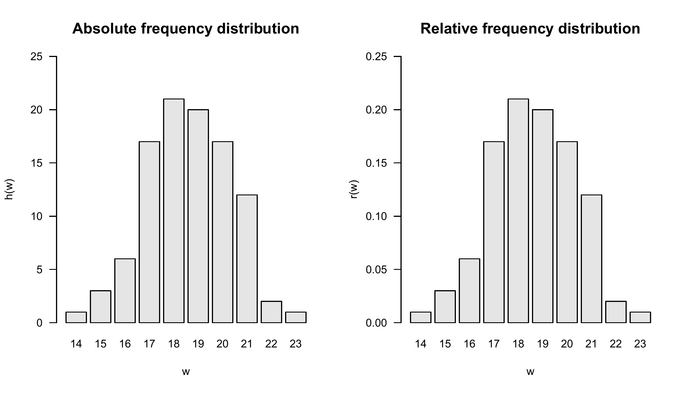
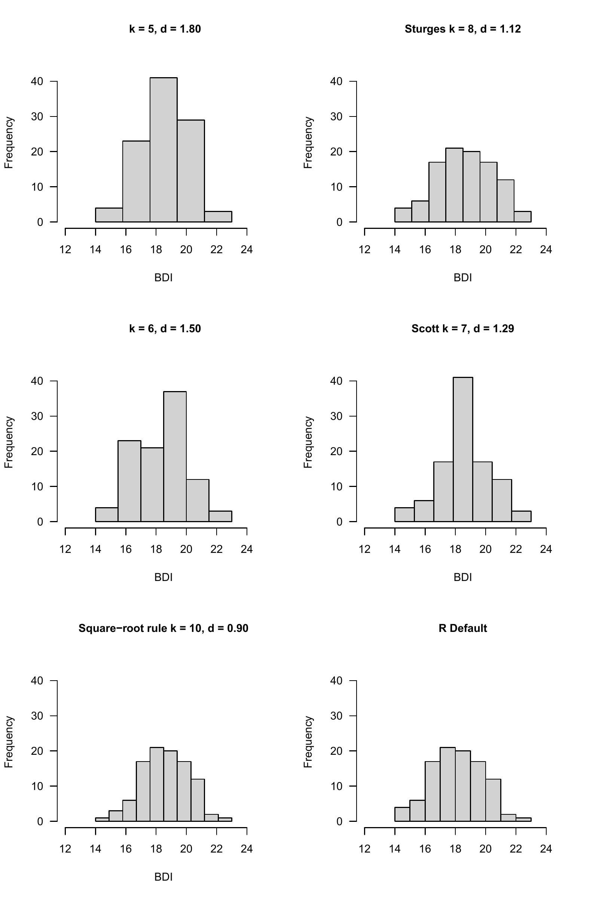
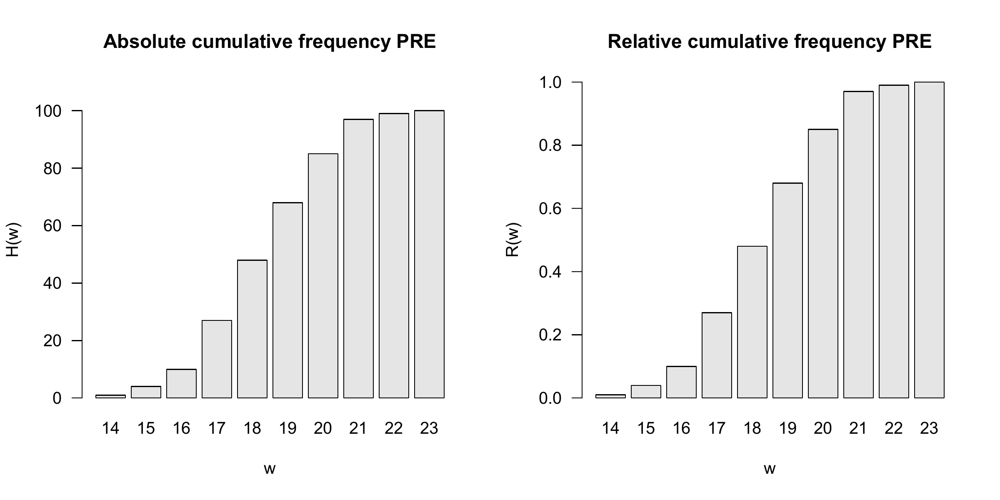
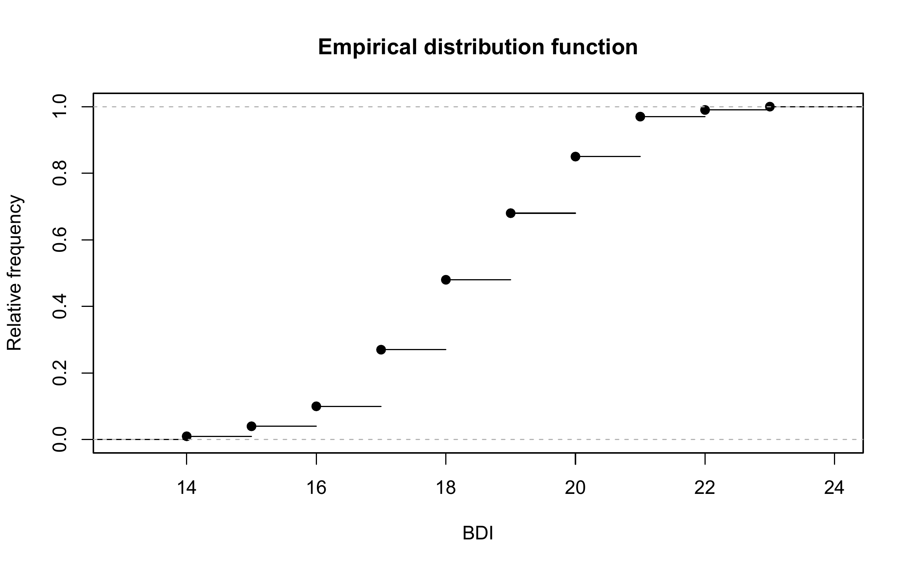
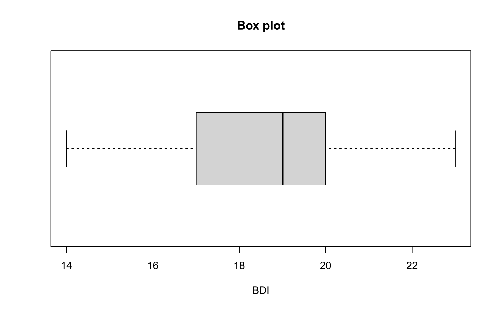
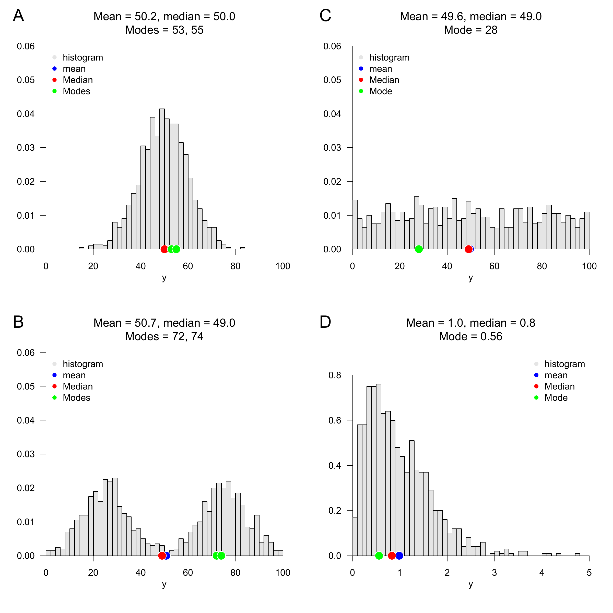

| GROUP | PRE |
|---|---|
| T | 17 |
| T | 20 |
| T | 16 |
| T | 18 |
| T | 21 |
| T | 17 |
| T | 17 |
| T | 17 |
| T | 18 |
| T | 18 |
| T | 20 |
| T | 17 |
| T | 16 |
| T | 18 |
| T | 16 |
| T | 18 |
| T | 17 |
| T | 14 |
| T | 18 |
| T | 18 |
| T | 20 |
| T | 20 |
| T | 21 |
| T | 19 |
| T | 19 |
| T | 17 |
| T | 20 |
| T | 21 |
| T | 17 |
| T | 17 |
| T | 19 |
| T | 20 |
| T | 22 |
| T | 20 |
| T | 21 |
| T | 20 |
| T | 16 |
| T | 15 |
| T | 15 |
| T | 18 |
| T | 21 |
| T | 17 |
| T | 18 |
| T | 21 |
| T | 17 |
| T | 19 |
| T | 16 |
| T | 17 |
| T | 17 |
| T | 18 |
| C | 22 |
| C | 19 |
| C | 21 |
| C | 18 |
| C | 19 |
| C | 17 |
| C | 20 |
| C | 19 |
| C | 19 |
| C | 19 |
| C | 17 |
| C | 20 |
| C | 18 |
| C | 20 |
| C | 18 |
| C | 18 |
| C | 15 |
| C | 18 |
| C | 17 |
| C | 19 |
| C | 19 |
| C | 19 |
| C | 20 |
| C | 19 |
| C | 20 |
| C | 19 |
| C | 21 |
| C | 19 |
| C | 19 |
| C | 18 |
| C | 20 |
| C | 16 |
| C | 21 |
| C | 19 |
| C | 20 |
| C | 18 |
| C | 23 |
| C | 18 |
| C | 19 |
| C | 18 |
| C | 21 |
| C | 17 |
| C | 20 |
| C | 21 |
| C | 21 |
| C | 20 |
| C | 18 |
| C | 18 |
| C | 19 |
| C | 19 |
10 Descriptive statistics
The aim of evaluating descriptive statistics is to make data sets accessible to human observation as efficiently as possible. As soon as the number of data points in a data set exceeds a certain number, pure numerical representations are usually difficult for human cognition to grasp. This is where descriptive statistics comes in and, in addition to graphical representations of larger data sets, also offers measures that describe certain characteristic aspects of a data set, such as its “average” value or its variability, in the sense of data reduction. In this section we want to use univariate descriptive statistics to get to know the first procedures and measures that make it possible to summarize data sets in which there is one number per study unit. We look in particular at frequency distributions and histograms, distribution functions and quantiles, as well as measures of central tendency, which allow statements about “average” data values, and measures of data variability, which allow statements about the spread of data values.
In contrast to probabilistic modeling in the context of frequentist and Bayesian inference, descriptive statistics is not based on probability theory and can therefore be viewed independently of it. However, many aspects of descriptive statistics ultimately only make sense against the background of probability theory considerations and, conversely, many concepts in probability theory are motivated by descriptive statistical concepts. If the present section does not have a background in probability theory, its full meaning will certainly only become apparent in the context of the concepts of probability theory.
In this section, we focus on descriptive statistics for describing a data set of the form \[\begin{equation} y := (y_1,...,y_n) \mbox{ with } y_i \in \mathbb{R} \mbox{ for } i = 1,...,n. \end{equation}\] It is initially irrelevant whether such a data set is in the form of a column vector \(y \in \mathbb{R}^{n \times 1}\) or a row vector \(y \in \mathbb{R}^{1 \times n}\). Furthermore, we focus on the practical evaluation of the descriptive statistics considered, so we provide many examples for their calculation with R.
Application example
As an application example, we consider a data set for the evidence-based evaluation of psychotherapy for depression. To do this, we assume that \(n = 100\) patients were randomly divided into a treatment and a control study condition and were asked about their depression severity using the BDI-II questionnaire at the beginning of the respective intervention. We do not want to consider the BDI-II scores collected after the interventions in this chapter. So we assume that we have a data set as shown by the following R code in Table 10.1.
10.1 Frequency distributions
We start with the concepts of absolute and relative frequency distribution. For data sets with values in which the same value occurs multiple times, frequency distributions can provide a first impression of the nature of the data set.
Definition 10.1 (Absolute and relative frequency distributions) Let \(y := (y_1,...,y_n)\) be a data set, and let \(W := \{w_1,...,w_k\}\), with \(k \le n\), be the set of values occurring in the data set. Then the function \[\begin{equation} h : W \to \mathbb{N}, w \mapsto h(w) := \mbox{number of } y_i \mbox{ in } y \mbox{ with } y_i = w \end{equation}\] the absolute frequency distribution of the values of \(y\) and the function \[\begin{equation} r : W \to [0,1], w \mapsto r(w) := \frac{h(w)}{n} \end{equation}\] is called the relative frequency distribution of the values of \(y\).
Frequency distributions can be evaluated and displayed in R by combining the table() and barplot() functions. The following R code first generates the absolute and relative frequency distributions of the pre-intervention BDI-II data of the example data set.
D = read.csv("./_data/110-descriptive-statistics.csv") # Load data set
y = D$PRE # PRE values as double
n = length(y) # Number of values (100)
H = as.data.frame(table(y)) # Absolute frequencies
names(H) = c("w", "ah") # column naming
H$rh = H$ah/n # Relative frequencies
print(H, digits = 1) # Output w ah rh
1 14 1 0.01
2 15 3 0.03
3 16 6 0.06
4 17 17 0.17
5 18 21 0.21
6 19 20 0.20
7 20 17 0.17
8 21 12 0.12
9 22 2 0.02
10 23 1 0.01The output of dataframe H shows that the data set contains 10 distinct values w between 14 and 23. For example, the values 18 and 22 occur 21 times and twice, respectively. Both the absolute and relative frequency distributions show that values around 18 occur frequently in this data set, whereas extreme values such as 14 or 23 are relatively rare. Note that the relative frequency distribution is simply a scaled version of the absolute frequency distribution. Qualitatively, that is, in terms of the more or less frequent occurrence of particular values, the two distributions do not differ. This is particularly clear when both are visualized, as in Figure 10.1. The following R code uses barplot() for this purpose. The height of the bar above a value \(w\) corresponds to the function value \(h(w)\) or \(r(w)\), respectively. The visual impression naturally agrees with inspection of dataframe H. Both frequency distributions show that values around 18 occur frequently, whereas lower or higher values such as 14 or 23 are relatively rare.
pdf( # Open PDF file
file = "./_figures/110-frequency-distributions.pdf", # file name
width = 7, # Width in inches
height = 4) # Height in inches
par( # Graphics parameters
mfcol = c(1,2), # Panel arrangement
las = 1, # Axis text position
cex = 0.7, # Text scaling
cex.main = 1.3) # title enlargement
h = H$ah # h(w) values
r = H$rh # r(w) values
names(h) = H$w # w values as bar names
names(r) = H$w # w values as bar names
barplot( # bar chart
h, # Absolute frequencies
col = "gray90", # bar color
xlab = "w", # Horizontal axis label
ylab = "h(w)", # Vertical axis label
ylim = c(0,25), # Vertical axis limits
main = "Absolute frequency distribution") # title
barplot( # bar chart
r, # Relative frequencies
col = "gray90", # bar color
xlab = "w", # Horizontal axis label
ylab = "r(w)", # Vertical axis label
ylim = c(0,.25), # Vertical axis limits
main = "Relative frequency distribution") # title
dev.off() # Close graphics device
10.2 Histograms
If no values appear multiple times in a data set, the absolute and relative frequency distributions for each of these values take the value \(1\) and \(1/n\), respectively, and then provide no value beyond visual inspection of the data set. However, the histograms presented in this section offer a way to generate visual representations of frequency distributions in this case too. Different values that are “close to each other” in a well-defined sense are combined into classes and the absolute or relative frequencies of these classes are determined. Since in data sets in which the same values occur multiple times, these values are naturally in the same class, histograms can also be usefully used in the case considered in Section 10.1. Histograms generalize the frequency distributions considered in the previous section for data sets with multiple values.
We first give a definition of the concept of histogram. Note that in this definition the process of class formation, the determination of their absolute and relative frequencies, and the visualization of these frequencies are closely interlinked. This is due to the convention that the term histogram describes both a specific form of data analysis and its visualization.
Definition 10.2 (Histogram) Let \(y := (y_1,\ldots,y_n)\) be a data set containing at least two distinct values. Let the class boundaries be \(b_0 < b_1 < \cdots < b_k\), with \[\begin{equation} b_0 := \min_{1 \le i \le n} y_i \mbox{ and } b_k := \max_{1 \le i \le n} y_i. \end{equation}\] The classes are defined as \[\begin{equation} C_1 := \{t \in \mathbb{R} | b_0 \le t \le b_1\} \end{equation}\] and, for \(2 \le j \le k\), as \[\begin{equation} C_j := \{t \in \mathbb{R} | b_{j-1} < t \le b_j\}. \end{equation}\] We initially consider classes of equal width \(d := b_j - b_{j-1} > 0\). Each data value belongs to exactly one class. The absolute class frequency and relative class frequency are defined as \[\begin{equation} h_j := \left|\{i \in \{1,\ldots,n\} | y_i \in C_j\}\right| \mbox{ and } r_j := \frac{h_j}{n}. \end{equation}\] A frequency histogram displays a rectangle above each class \(C_j\), with width \(d\) and height \(h_j\) or \(r_j\), respectively. A density histogram is distinct from this. For class widths \(d_j > 0\), the rectangle above \(C_j\) has height \[\begin{equation} \frac{r_j}{d_j}. \end{equation}\] Its area therefore equals the relative class frequency \(r_j\). The total area of all rectangles is one.
The visual appearance of a histogram naturally depends strongly on how the values of a data set are grouped into classes. According to Definition 10.2, the decisive parameter is the number of classes \(k\) chosen between the minimum \(b_0\) and maximum \(b_k\) of the data set. In the following, we introduce some conventional choices for \(k\) and calculate and visualize them using the example data set. Throughout, we assume that the adjacent classes \(C_j\), with \(j = 1,...,k\), have constant width \(d = b_j - b_{j-1}\).
We use the R function hist() to calculate and visualize histograms. Its breaks argument specifies the class boundaries. Setting right = TRUE and include.lowest = TRUE gives the classes closed on the right from Definition 10.2. The first class also includes the minimum. Specifically, breaks is the R vector c(b_0,b_1,...,b_k) of length \(k + 1\).
With prob = TRUE, hist() produces a density histogram. The area of each rectangle then equals its relative class frequency, and the total area is one.
To illustrate the effect of different choices for the number of classes, we first read the data set and determine its minimum and maximum values \(b_0\) and \(b_k\).
Minimum b_0 : 14
Maximum b_k : 23A first possibility for choosing the classes \(k\) is to achieve a desired constant width \(d\) as precisely as possible. This is what you rely on \[\begin{equation} k := \left\lceil \frac{b_k - b_0}{d} \right\rceil. \end{equation}\] As in Definition 10.2, we consider data sets containing at least two distinct values. Applying the ceiling function means that the resulting class width is at most the desired value and may be smaller. The following R code illustrates this effect.
Desired class width d : 2
Number of classes k : 5
Class boundaries b_j : 14 15.8 17.6 19.4 21.2 23
Achieved class width d : 1.8Choosing a desired class width of \(d = 1.5\), on the other hand, leads to a resulting class width for the present data set that corresponds to the desired one.
Desired class width d : 1.5
Number of classes k : 6
Class boundaries b_j : 14 15.5 17 18.5 20 21.5 23
Achieved class width d : 1.5Another possibility is to make the number of classes depend on the number of data points. The square-root rule sets \[\begin{equation} k := \lceil \sqrt{n} \rceil. \end{equation}\] The following R code implements this choice for the present data set.
Number of data points n : 100
Number of classes k : 10
Class boundaries b_j : 14 14.9 15.8 16.7 17.6 18.5 19.4 20.3 21.2 22.1 23
Achieved class width d : 0.9Similar to the square-root rule is the number of classes proposed by Sturges (1926), which optimizes the display under an implicit normality assumption and is given by \[\begin{equation} k := \lceil \log_2 n + 1\rceil \end{equation}\] is given. In this case the result is:
Number of data points n : 100
Number of classes k : 8
Class boundaries b_j : 14 15.125 16.25 17.375 18.5 19.625 20.75 21.875 23
Achieved class width d : 1.125Another possibility is to incorporate descriptive statistics of the data set into the choice of the number of classes. As a measure of the dispersion of the data in the data set, the number of classes according to Scott (1979) uses the empirical standard deviation (cf. Section 10.6) in order to use the histogram to achieve a density estimate for a normal distribution. We do not want to delve into the non-parametric background of this approach here, but simply note that the choice of the number of classes according to Scott (1979) by determining the class width \[\begin{equation} d := 3.49 S/n^{1/3} \end{equation}\] and the subsequent choice of the number of classes \[\begin{equation} k := \left\lceil \frac{b_k - b_0}{d} \right\rceil \end{equation}\] is given, where \(S\) denotes the standard deviation of the data set. In this case the result is:
Number of data points n : 100
Standard deviation : 1.740167
Class width by Scott d : 1.308428
Number of classes k : 7
Class boundaries b_j : 14 15.28571 16.57143 17.85714 19.14286 20.42857 21.71429 23
Achieved class width d : 1.285714By default, the hist() function implemented in R uses a modification of the number of classes suggested by Sturges (1926) and offers a number of additional options for selecting classes. ?hist provides an overview of this. The following R code visualizes the absolute frequencies of the values of the example data set using the classes specified above.
# Graphics parameters
pdf( # Open PDF file
file = "./_figures/110-histograms.pdf", # file name
width = 6, # Width in inches
height = 9) # Height in inches
par( # Graphics parameters
mfcol = c(3,2), # Panel arrangement
las = 1, # Axis text position
cex = .7, # Text scaling
cex.main = .9) # title enlargement
x_min = 12 # Horizontal axis limit
x_max = 25 # Horizontal axis limit
y_min = 0 # Vertical axis limit
y_max = 45 # Vertical axis limit
label = c("", "", "Square-root rule", "Sturges", "Scott") # title
# histograms with predefined number of classes and class width
for(i in 1:5){
hist( # histogram
y, # data set
right = TRUE, # Classes closed on the right
include.lowest = TRUE, # Include the minimum
breaks = bs[[i]], # breaks argument
xlim = c(x_min, x_max), # Horizontal axis limits
ylim = c(y_min, y_max), # Vertical axis limits
ylab = "Frequency", # Vertical axis label
xlab = "BDI", # Horizontal axis label
main = sprintf( # title
paste(label[i], "k = %.0f, d = %.2f"), # Text pattern
ks[i], # Number of classes
ds[i])) # class width
}
# R default histogram
hist( # histogram
y, # data set
right = TRUE, # Classes closed on the right
include.lowest = TRUE, # Include the minimum
xlim = c(x_min, x_max), # Horizontal axis limits
ylim = c(y_min, y_max), # Vertical axis limits
ylab = "Frequency", # Vertical axis label
xlab = "", # Horizontal axis label
main = "R Default") # title
dev.off() # Close graphics device
10.3 Empirical distribution functions
In addition to the question of how frequently certain values or classes of values occur in a data set, it can be interesting to examine how frequently values that are smaller than a certain value occur. Although the answer to this question is of course implicit in the absolute and relative frequencies or the corresponding histograms, it is sometimes advantageous to have this information directly available. The concepts of cumulative absolute and relative frequency distribution and empirical distribution function introduced in this section denote the corresponding analogues to the concepts discussed in Section 10.1 and Section 10.2. We begin by defining the cumulative absolute and cumulative relative frequency distributions.
Definition 10.3 (Cumulative absolute and relative frequency distributions) Let \(y = (y_1,...,y_n)\) be a data set, and let \(W := \{w_1,...,w_k\}\), with \(k \le n\), be the set of numerical values occurring in it. Furthermore, let \(h\) be the absolute frequency distribution and \(r\) the relative frequency distribution of the values of \(y\). Then the function \[\begin{equation} H : W \to \mathbb{N}, w \mapsto H(w) := \sum_{w' \le w} h(w') \end{equation}\] the cumulative absolute frequency distribution of \(y\) and the function \[\begin{equation} R : W \to [0,1], w \mapsto R(w) := \sum_{w' \le w} r(w') \end{equation}\] the cumulative relative frequency distribution of the numerical values of \(y\).
In the sense of the definition Definition 10.1 applies to the cumulative frequency distributions \[\begin{equation} H(w) = \mbox{number of } y_i \mbox{ in } y \mbox{ with } y_i \le w \end{equation}\] and \[\begin{equation} R(w) = \mbox{number of } y_i \mbox{ in } y \mbox{ with } y_i \le w \mbox{ divided by } n. \end{equation}\]
In R, the function cumsum() allows the calculation of cumulative sums and thus enables the evaluation of cumulative frequency distributions, as the following R code demonstrates using the example data set.
D = read.csv("./_data/110-descriptive-statistics.csv") # Load data set
y = D$PRE # PRE BDI-II data
n = length(y) # number of data values
H = as.data.frame(table(y)) # Absolute frequencies
names(H) = c("w", "h") # column naming
H$H = cumsum(H$h) # Cumulative counts
H$r = H$h/n # Relative frequencies
H$R = cumsum(H$r) # Cumulative proportions
print(H, digits = 1) w h H r R
1 14 1 1 0.01 0.01
2 15 3 4 0.03 0.04
3 16 6 10 0.06 0.10
4 17 17 27 0.17 0.27
5 18 21 48 0.21 0.48
6 19 20 68 0.20 0.68
7 20 17 85 0.17 0.85
8 21 12 97 0.12 0.97
9 22 2 99 0.02 0.99
10 23 1 100 0.01 1.00In particular, compare h with H and r with R, which illustrate the cumulative sums in Definition 10.3. The following R code displays the resulting cumulative frequency distributions as shown in Figure 10.3. Clearly, the absolute and relative frequencies of values smaller than the smallest data value are zero. The absolute and relative frequencies of values less than or equal to the largest data value, by contrast, are \(n\) and \(n/n = 1\), respectively.
pdf( # Open PDF file
file = "./_figures/110-cumulative-frequency-distributions.pdf", # file name
width = 10, # Width in inches
height = 5) # Height in inches
Hw = H$H # H(w) values
Rw = H$R # R(w) values
names(Hw) = H$w # Bar names
names(Rw) = H$w # Bar names
par( # Graphics parameters
mfcol = c(1,2), # Panel arrangement
las = 1, # Axis text position
cex = 1) # Text scaling
barplot( # bar chart
Hw, # H(w) values
col = "gray90", # bar color
xlab = "w", # Horizontal axis label
ylab = "H(w)", # Vertical axis label
ylim = c(0,110), # Vertical axis limits
las = 1, # Axis text position
main = "Absolute cumulative frequency PRE") # title
barplot( # bar chart
Rw, # R(w) values
col = "gray90", # bar color
xlab = "w", # Horizontal axis label
ylab = "R(w)", # Vertical axis label
ylim = c(0,1), # Vertical axis limits
las = 1, # Axis text position
main = "Relative cumulative frequency PRE") # title
dev.off() # Close graphics device
The cumulative analogue of a histogram is the empirical distribution function. In contrast to a histogram, no definition of classes is required to determine an empirical distribution function. Instead of the interval division of the real numbers between the minimum and the maximum of a data set, the empirical distribution function simply uses the real numbers, as the following definition makes clear.
Definition 10.4 (Empirical distribution function) Let \(y = (y_1,...,y_n)\) be a data set. Then the function is called \[\begin{equation} F: \mathbb{R} \to [0,1], x \mapsto F(x) := \frac{\mbox{number of } y_i \mbox{ in } y \mbox{ with } y_i \le x}{n} \end{equation}\] the empirical distribution function (EVF) of \(y\).
The empirical distribution function is sometimes called the empirical cumulative distribution function. In general, the empirical distribution function as in Definition 10.4 is limited to specifying the relative frequencies. Of course, not all real numbers appear in data sets. This implies that the relative frequency assigned to real numbers that lie between two adjacent values in the data set is equal to that of the smaller of the two values. Typically, empirical distribution functions are step functions. In R, the function ecdf() can be used to evaluate and visualize the empirical distribution function, as the following R code demonstrates using the example data set and is visualized in Figure 10.4. For example, you can read from Figure 10.4 that the relative frequency of values smaller than 17.9 is approximately 0.3. Values smaller than 17.8 have the same relative frequency.
D = read.csv("./_data/110-descriptive-statistics.csv") # Load data set
y = D$PRE # PRE BDI-II data
evf = ecdf(y) # evaluation of the EVF
pdf( # Open PDF file
file = "./_figures/110-ecdf.pdf", # file name
width = 8, # Width in inches
height = 5) # Height in inches
plot( # Display ECDF
evf, # ecdf object
xlab = "BDI", # Horizontal axis label
ylab = "Relative frequency", # Vertical axis label
main = "Empirical distribution function") # title
dev.off() # Close graphics device
The function produced by ecdf() can also be evaluated at individual points.
[1] 0.27[1] 0.68In the example data set, 27% of the BDI PRE values are less than or equal to 17, and 68% are less than or equal to 19.
10.4 Quantiles and boxplots
The empirical distribution function provides, at least graphically, an answer to the question of what proportion of the values in a data set is smaller than a given value. The quantiles introduced in this section can be understood as reversing this question. For quantiles, one specifies a proportion \(0 \le p \le 1\) and determines a value such that at least \(p \cdot 100\%\) of the data values are less than or equal to it and at least \((1-p) \cdot 100\%\) are greater than or equal to it. We use the following definition of a \(p\)-quantile.
Definition 10.5 (\(p\) quantile) Let \(y := (y_1,\ldots,y_n)\) be a data set with \(n \ge 1\), and let \(y_{(1)} \le \cdots \le y_{(n)}\) be its values sorted in ascending order. Furthermore, let \(\lfloor\cdot\rfloor\) denote the floor function. For \(0 \le p \le 1\), the number \[\begin{equation} y_p := \begin{cases} y_{(1)} & p = 0, \\ y_{(\lfloor np + 1\rfloor)} & 0 < p < 1,\ np \notin \mathbb{N}, \\ \frac{y_{(np)} + y_{(np + 1)}}{2} & 0 < p < 1,\ np \in \mathbb{N}, \\ y_{(n)} & p = 1 \end{cases} \end{equation}\] the \(p\) quantile of the data set \(y\).
Note that the \(p\)-quantile \(y_p\) in Definition 10.5 is either a value in the data set or a value between two of its values. By construction, at least \(p \cdot 100\%\) of all data values are less than or equal to \(y_p\), and at least \((1-p) \cdot 100\%\) are greater than or equal to \(y_p\). These proportions need not be attained exactly. In particular, repeated data values can make the respective proportions larger. Depending on the choice of \(p\), the \(p\)-quantiles have special names:
- \(y_{0.25}, y_{0.50}, y_{0.75}\) are called the lower quartile, median, and upper quartile, respectively,
- \(y_{j\cdot 0.10}\) for \(j = 1,...,9\) are called deciles and
- \(y_{j\cdot 0.01}\) for \(j = 1,...,99\) are called percentiles.
To clarify the concept of the \(p\) quantile, let us consider an example based on Henze (2018), chapter 5. First of all, the data set shown in the table below and its version sorted in ascending order are given.
We first want to determine the lower quartile, i.e. the \(0.25\) quantile, of this data set. It’s apparently \(n = 10\) and we chose \(p := 0.25\). Based on Definition 10.5 we find that \[\begin{equation} np = 10 \cdot 0.25 = 2.5 \notin \mathbb{N}. \end{equation}\] So according to Definition 10.5 it applies that \[\begin{equation} y_{0.25} = y_{(\lfloor 2.5 + 1\rfloor)} = y_{(3)} = 3.0. \end{equation}\] The lower quartile of this data set is therefore \(3.0\). The four data values \(1.5\), \(2.5\), \(3.0\), and \(3.0\) are less than or equal to this value. Thus 40% of the data values are less than or equal to the lower quartile. This exceeds the required 25%, which is consistent with the quantile definition.
Next we want to determine the \(0.80\) quantile of the data set. Apparently it is still \(n = 10\) and we have now chosen \(p := 0.80\). In this case we find that \[\begin{equation} np = 10 \cdot 0.80 = 8 \in \mathbb{N}. \end{equation}\] So follows after Definition 10.5 \[\begin{equation} y_{0.80} = \frac{1}{2} \left(y_{(8)} + y_{(8 + 1)}\right) = \frac{1}{2}\left(y_{(8)} + y_{(9)}\right) = \frac{8.5 + 9.0}{2} = 8.75. \end{equation}\] The \(0.80\)-quantile of this data set is therefore \(8.75\), the value between the data values \(8.5\) and \(9\). In R, these quantiles are evaluated as follows.
0.25-quantile: 30.80-quantile: 8.75The R function quantile() automates the determination of quantiles. The quantile definition in Definition 10.5 corresponds to type = 2 in R. Thus quantile(y, p, type = 2) computes the quantiles specified by this definition. The type argument also allows other quantile definitions to be selected. For an overview, see Hyndman & Fan (1996) for the theory and ?quantile for the implementation. We determine the \(0.25\)-quantile of the pre-intervention BDI-II example data set using type = 2.
0.25-quantile (type = 2): 17A boxplot visualizes a summary of a data set using five numbers. In the following example, the whiskers extend to the minimum and maximum because range = 0. The boundaries of the central box are the lower Tukey hinge and the upper Tukey hinge. The median is displayed as a line inside the box.
To determine the Tukey hinges, the data set is first sorted in ascending order. If the number of data values is even, it is split into two equally sized halves. If the number is odd, the middle data value is included in both halves. The lower Tukey hinge is the median of the lower half, and the upper Tukey hinge is the median of the upper half. This construction is part of the five-number summary of Tukey (1977), Section 2C, and is computed in R by fivenum().
The Tukey hinges do not coincide with the quartiles from the quantile definition above for every data set. For the data set \[\begin{equation} y := (1,2,3,4,5,6,7) \end{equation}\] the two halves are \((1,2,3,4)\) and \((4,5,6,7)\). Their medians, and hence the Tukey hinges, are \[\begin{equation} h_{\mathrm{u}} := \frac{2+3}{2} = 2.5 \mbox{ and } h_{\mathrm{o}} := \frac{5+6}{2} = 5.5. \end{equation}\] The quartiles according to Definition 10.5, by contrast, are \(y_{0.25} = 2\) and \(y_{0.75} = 6\). The following R code compares the Tukey hinges and quartiles for this separate example.
[1] 1.0 2.5 4.0 5.5 7.025% 75%
2 6 The interquartile range \(d_Q := y_{0.75}-y_{0.25}\) measures the spread of the data. It is not generally identical to the difference between the Tukey hinges. In the separate example \(y=(1,\ldots,7)\), the interquartile range is \(6-2=4\), whereas the difference between the Tukey hinges is \(5.5-2.5=3\).
The following R code creates a boxplot of the pre-intervention BDI-II data set.
D = read.csv("./_data/110-descriptive-statistics.csv") # Load data set
pdf( # Open PDF file
file = "./_figures/110-boxplot.pdf", # file name
width = 8, # Width in inches
height = 5) # Height in inches
boxplot( # box plot
D$PRE, # data set
horizontal = T, # Display horizontally
range = 0, # Whiskers: minimum and maximum
xlab = "BDI", # Horizontal axis label
main = "Box plot") # title
dev.off() # Close graphics device
The five numbers displayed in the boxplot are obtained with fivenum(). For the BDI PRE values, they are 14, 17, 19, 20, and 23.
In Figure 10.5, \(\min y\) and \(\max y\) are displayed as the whisker endpoints. The lower and upper Tukey hinges form the boundaries of the central gray box. The median \(y_{0.50}\) is displayed as a line inside the box. There are many boxplot variants, see McGill et al. (1978). A precise explanation of the data set properties shown is therefore always necessary. Finally, displaying data sets using boxplots has become somewhat less fashionable over the last twenty years, and they are now only rarely found in current scientific publications.
10.5 Measures of central tendency
In this section we look at some basic data set metrics that are central to descriptive statistics and provide information about the “average” value of a data set. We start by defining the mean.
10.5.1 Mean
Definition 10.6 (Mean) Let \(y = (y_1,...,y_n)\) be a data set. Then that means \[\begin{equation} \bar{y} := \frac{1}{n}\sum_{i=1}^n y_i \end{equation}\] the mean of \(y\).
The mean of a data set is the sum of the data values divided by the number of data values. The mean defined here is also referred to as the arithmetic mean or average. In the context of frequentist inference, we will refer to the mean as the sample mean in the context of the random sampling model. In particular, the models of frequentist inference also allow the functional form of the mean to be more deeply substantiated, as we will see at a given point. Using the sum function, you can calculate the mean of a data set in R as follows.
Mean of PRE-BDI-II data 18.61With the mean() function, R of course also provides a function for automated calculation of the mean value.
In the following theorem we first note two properties of the mean value of a data set that make its classification as a measure of the central tendency of a data set plausible.
Theorem 10.1 (Centrality properties of the mean) Let \(y = (y_1,...,y_n)\) be a data set and \(\bar{y}\) be the mean of \(y\). Then apply
- The sum of the deviations from the mean is zero, \[\begin{equation} \sum_{i=1}^n (y_i - \bar{y}) = 0. \end{equation}\]
- The absolute sums of negative and nonnegative deviations from the mean are equal. The index sets \[\begin{equation} J := \{i \in \{1,\ldots,n\} | y_i - \bar{y} < 0\} \end{equation}\] and \[\begin{equation} K := \{i \in \{1,\ldots,n\} | y_i - \bar{y} \ge 0\} \end{equation}\] contain the indices of the negative and nonnegative deviations, respectively. Then \[\begin{equation} \left|\sum_{i \in J} (y_i - \bar{y})\right| = \left|\sum_{i \in K} (y_i - \bar{y})\right|. \end{equation}\]
Proof. (1) It applies \[\begin{equation} \begin{aligned} \begin{split} \sum_{i=1}^n (y_i - \bar{y}) & = \sum_{i=1}^n y_i - \sum_{i=1}^n \bar{y} \\ & = \sum_{i=1}^n y_i - n\bar{y} \\ & = \sum_{i=1}^n y_i - \frac{n}{n}\sum_{i=1}^n y_i \\ & = \sum_{i=1}^n y_i - \sum_{i=1}^n y_i \\ & = 0. \end{split} \end{aligned} \end{equation}\]
(2) Since \(J\) and \(K\) partition the data point indices completely and without overlap, statement (1) gives \[\begin{equation} 0 = \sum_{i=1}^{n} (y_i - \bar{y}) = \sum_{i \in J} (y_i - \bar{y}) + \sum_{i \in K} (y_i - \bar{y}). \end{equation}\] Hence \[\begin{equation} \sum_{i \in K} (y_i - \bar{y}) = -\sum_{i \in J} (y_i - \bar{y}) \end{equation}\] and therefore \[\begin{equation} \left|\sum_{i \in J} (y_i - \bar{y})\right| = \left|\sum_{i \in K} (y_i - \bar{y})\right|. \end{equation}\]
According to Theorem 10.1, the mean value of a data set is just such that the total deviations of the data points from this value equalize to zero and that positive and negative deviations from the mean balance each other out. In R you can verify Theorem 10.1 using the example data set as follows.
Sum of deviations from the mean: 0
Sums of negative and nonnegative deviations: -71.28 71.28Theorem 10.2 (Summation properties of the mean) Given two data sets \(y = (y_1,...,y_n)\) and \(z = (z_1,...,z_n)\) of the same size and let it be by \[\begin{equation} y + z := (y_1 + z_1,...,y_n + z_n) \end{equation}\] the sum of these data sets is defined. Furthermore, let \(\bar{y}\) and \(\bar{z}\) be the mean values of the data sets \(y\) and \(z\), respectively. Then \[\begin{equation} \overline{y + z} = \bar{y} + \bar{z} \end{equation}\] \[\begin{equation} \overline{y + z} = \bar{y} + \bar{z} \end{equation}\]
Proof. It applies \[\begin{equation} \begin{aligned} \begin{split} \overline{y + z} & := \frac{1}{n}\sum_{i=1}^n (y_i + z_i) \\ & = \frac{1}{n}\sum_{i = 1}^n y_i + \frac{1}{n}\sum_{i = 1}^n z_i \\ & =: \bar{y} + \bar{z}. \end{split} \end{aligned} \end{equation}\]
If you look at the sum of two data sets, it is irrelevant to determining their mean value whether you first add up the data sets and then determine the mean value of the summed data set or whether you determine the mean value for each of the two data sets and add them up. We verify this result using the pre- and post-intervention BDI-II data from the example data set in R as follows.
Mean of y + z : 31.68
Sum of the means of y and z : 31.68Theorem 10.3 (Mean under linear-affine transformation) Let \(y = (y_1,...,y_n)\) be a data set and \(\bar{y}\) be the mean of \(y\). Furthermore, be for \(a,b \in \mathbb{R}\) \[\begin{equation} ay + b := (ay_1 + b,...,ay_n + b) \end{equation}\] a linear-affine transformed data set of \(y\) is defined. Then that applies \[\begin{equation} \overline{ay + b} = a\bar{y} + b \end{equation}\]
Proof. It applies \[\begin{equation} \begin{aligned} \begin{split} \overline{ay + b} & := \frac{1}{n}\sum_{i=1}^n (ay_i + b) \\ & = \sum_{i=1}^n \left(\frac{1}{n}ay_i + \frac{1}{n}b\right) \\ & = \left(\sum_{i=1}^n \frac{1}{n}ay_i\right) + \left(\sum_{i=1}^n \frac{1}{n}b\right) \\ & = a\left(\frac{1}{n}\sum_{i=1}^n y_i\right) + \frac{1}{n} \sum_{i=1}^n b \\ & = a\bar{y} + \frac{1}{n} nb \\ & = a\bar{y} + b. \end{split} \end{aligned} \end{equation}\]
A linear-affine transformation of a data set transforms the mean value of the data set in a linear-affine manner. You can take advantage of this if you think about what the mean value should be when rescaling a data set, for example converting from grams to kilograms. Of course, to be on the safe side, you can also simply determine the average of the rescaled data set. We demonstrate this property as an example by rescaling the pre-intervention BDI-II data set with the value \(a = 2\) while simultaneously adding the constant \(b := 5\).
Mean value of the transformed data set: 42.22
Transformation of the mean : 42.2210.5.2 Median
In the mean value defined above, each value of a data set is included summatively with the same weight \(1/n\). This particularly applies to values that are very atypical compared to the other values in the data set. One way to determine the “center” of a data set independent of such atypical values is to determine its median, which we define below. We already learned about the median in section Section 10.4 as the 0.5 quantile, with which it is identical.
Definition 10.7 (Median) Let \(y = (y_1,...,y_n)\) be a data set and \(y_{s} = (y_{(1)},...,y_{(n)})\) the corresponding data set sorted in ascending order. Then the median of \(y\) is defined as \[\begin{equation} \tilde{y} := \begin{cases} y_{((n+1)/2)} & \mbox{ if } n \mbox{ ungerade}, \\ \frac{1}{2}\left(y_{(n/2)} + y_{(n/2 + 1)}\right) & \mbox{ if } n \mbox{ gerade}. \end{cases} \end{equation}\]
Definition 10.7 implies that at least 50% of all data values \(y_i\) of the data set are less than or equal to \(\tilde{y}\) and at the same time at least 50% of all data values \(y_i\) of the data set are greater than or equal to \(\tilde{y}\). Instead of a formal proof of these statements, we refer to Figure 10.6. As in the definition of the median, we differentiate between the cases where the number of data points is odd (here \(n = 5\), Figure 10.6 A) or even (\(n = 6\), Figure 10.6 B). In the case of an odd number of data points, the median is the data value with the index number that lies in the middle of the index numbers of the sorted data set, in the example Figure 10.6 A, i.e. the value \(y_{(3)}\). In this case, \(3/5\), i.e. \(60\%\) of the data values (specifically \(y_{(1)}\), \(y_{(2)}\) and \(y_{(3)}\)) are less than or equal to the median, but at the same time \(3/5\), i.e. \(60\%\) of the data values (specifically \(y_{(3)}\), \(y_{(4)}\) and \(y_{(5)}\)) greater than or equal to the median. In the case of an even number of data points, the location of the median is somewhat more intuitive: the median lies in the middle of the two middle values of the sorted data set (in Figure 10.6 B specifically in the middle of the values \(y_{(3)}\) and \(y_{(4)}\)). This means that \(3/6\), i.e. \(50\%\) of the data values (specifically \(y_{(1)}\), \(y_{(2)}\) and \(y_{(3)}\)) are smaller than the median and \(3/6\), i.e. \(50\%\) of the data values (specifically \(y_{(4)}\), \(y_{(5)}\) and \(y_{(6)}\)) are larger than the median.

The following R code determines the median of the example data set using Definition 10.7.
D = read.csv("./_data/110-descriptive-statistics.csv") # Load data set
y = D$PRE # PRE BDI-II data
n = length(y) # number of values
y_s = sort(y) # Sort in ascending order
if(n %% 2 == 1){ # n odd, n mod 2 == 1
y_tilde = y_s[(n+1)/2] # Median for odd n
} else { # n even, n mod 2 == 0
y_tilde = (y_s[n/2] + y_s[n/2 + 1])/2} # Median for even nMedian of PRE-BDI-II data: 19Of course, R also provides a function with median() for directly determining the median, as the following R code demonstrates.
The following simulation shows as an example that the median, as a measure of the middle of a data set, is less susceptible to outliers than the mean.
Mean and median for data set without outliers: 18.61 19Mean and median for data set with outliers: 118.44 19So, although the median appears to be a more robust measure of the central tendency of a data set than the mean, determining averages is certainly the more common approach. On the one hand, this is due to the fact that the mean value is easier to use in an analytical context for designing probabilistic models due to its mathematically less complex definition. On the other hand, the occurrence of extreme values is usually a sign of data collection errors (e.g. a BDI-II value of 10.000 simply should not occur) or large differences between the experimental units under consideration, which are usually noticed by visual inspection of the data set before determining measures of central tendency. However, there is a whole subfield of statistics that deals with - in the broadest sense - measures that are independent of outliers, see e.g. Huber (1981).
10.5.3 Mode
If some values occur repeatedly in a data set, a third measure of central tendency is given with the mode as the value that occurs most frequently in a data set. We use the following definition.
Definition 10.8 (Mode) Let \(y := (y_1,\ldots,y_n)\) be a data set, \(W\) the set of its distinct numerical values, and \(h\) its absolute frequency distribution. Each value \(w \in W\) for which \[\begin{equation} h(w) = \max_{v \in W} h(v), \end{equation}\] holds is called a mode of \(y\). The set of all modes is \[\begin{equation} M := \{w \in W | h(w) = \max_{v \in W} h(v)\}. \end{equation}\] If \(M\) contains exactly one value, the mode is unique.
In R, all modes of a data set can be determined as follows.
10.5.4 Data distribution shapes and measures of central tendency
How useful it is to use the mean, median or mode to provide information about the central tendency of a data set depends largely on the nature of the data set. For example, if you have a data set of high-resolution data in which no data value appears multiple times, the mode is certainly not suitable for making a quantitative statement about the central tendency of the data set. The specification of a measure of central tendency should always be viewed in the context of the overall nature of the data set and, if applicable, the inferential statistical model that is used to interrogate the data set. In Figure 10.7 we give four examples of how the measures of central tendency considered above can behave in different data value distribution scenarios. Of course, these four scenarios are not exhaustive and each data set should be viewed critically for a meaningful measure of central tendency.
Figure 10.7 A visualizes the positions of the mean, median, and modes in a data set distributed symmetrically around approximately \(y = 50\). Values close to this central value occur frequently, and values far from it are relatively rare. As we will see later, these are typical characteristics of normally distributed data. The values 53 and 55 each occur 45 times and are tied for the highest frequency, so both are modes of this data set. Here, the mean, median, and the two modes lie fairly close together and describe the central tendency of the data set.
Figure 10.7 B visualizes the positions of the mean, median, and modes in a data set whose values cluster around approximately \(y = 25\) and \(y = 75\) and become rarer in either direction away from these values. For example, there are relatively few data points around \(y = 50\). Yet the mean and median take values around \(y = 50\). For this data set, they therefore indicate the central “physical center of gravity” rather than which values occur most frequently. The two modes, 72 and 74, each occur 27 times and lie near the larger of the two clusters. Overall, none of the three measures describes the central tendency of such a data set, also called bimodal, particularly satisfactorily.
Figure 10.7 C visualizes the positions of the mean, median, and mode in a data set whose values occur with approximately equal frequency throughout the range considered. Here, the mode lies fairly arbitrarily around \(y = 28\), where there is a slight concentration of values. The mean and median again lie around \(y = 50\), in the sense of the data set’s “physical center of gravity”, even though the values show no tendency to occur more frequently there than elsewhere. Again, the measures considered do not describe the central tendency particularly satisfactorily. Taken together, Figure 10.7 B and Figure 10.7 C suggest that if a data set has no clear central tendency, measures of central tendency cannot represent one either.
Figure 10.7 D shows the positions of the mean, median, and mode for a data set with a right-skewed distribution. The data are simulated from a gamma distribution with shape parameter \(2\) and rate \(2\). The corresponding density has its mode at \(0.5\). Higher values occur with decreasing density, and the distribution has a long tail to the right. In psychology, reaction times in particular often have a similar distribution. They cannot be negative and mostly lie in the range of about 0.3 to 0.6 seconds, but can sometimes be much longer due to inattention or stimulus variability. Here, the median describes the actual central tendency somewhat better than the mean, since the rare outlying values shift the mean toward higher values.
Overall, the specification of one or more measures of central tendency must always be viewed critically against the background of the distribution of the values of a data set and classified qualitatively.

10.6 Measures of variability
In addition to the question of what “average value” a data set assumes, it is often of interest to quantify how much the values in the data set are scattered or, in other words, how “variable” they are. Here we consider the range, the empirical variance and the empirical standard deviation as quantitative measures of the variability of a data set. As with the mean, the full meaning of the latter measures becomes apparent primarily in the context of inferential statistical methods.
10.6.1 Range
The range of a data set is the difference between its largest and smallest values.
Definition 10.9 (Range) Let \(y = (y_1,...,y_n)\) be a data set. Then the of \(y_1,...,y_n\) is defined as \[\begin{equation} r := \max(y_1,...,y_n) - \min(y_1,...,y_n). \end{equation}\]
In R you determine the range either by evaluating the maximum and minimum of the data set using the max() and min() functions or directly using the range() function. The following R code demonstrates the use of the max() and min() functions.
Range of PRE-BDI-II data: 9The following R code demonstrates the use of the range() function.
Range of PRE-BDI-II data: 910.6.2 Empirical variance
A typical statistical measure of the variability of data sets is the standardized sum of the squared differences between the individual data values and their mean. The squared differences between the individual data values and their mean are also referred to as difference squares. Depending on the form of standardization, i.e. the formation of an average of the squared deviations, a distinction is made between uncorrected empirical variance and empirical variance, as the following definition states.
Definition 10.10 (Uncorrected empirical variance and empirical variance) Let \(y := (y_1,\ldots,y_n)\) be a data set with \(n \ge 1\), and let \(\bar{y}\) be its mean. The uncorrected empirical variance of \(y\) is defined as \[\begin{equation} \tilde{s}^2 := \frac{1}{n}\sum_{i=1}^n (y_i - \bar{y})^2 \end{equation}\] For \(n > 1\), the empirical variance of \(y\) is defined as \[\begin{equation} s^2 := \frac{1}{n-1}\sum_{i=1}^n (y_i - \bar{y})^2. \end{equation}\]
We saw in Theorem 10.1 that the sum of the differences between the data values and their mean is always zero. Squaring the differences \[\begin{equation} y_i - \bar{y} \mbox{ for } i = 1,...,n \end{equation}\] as in Definition 10.10 prevents positive and negative deviations from canceling. The sum \[\begin{equation} \sum_{i=1}^n (y_i - \bar{y})^2 \end{equation}\] provides a measure of the overall deviation of the data values from their mean. The sum of squared deviations is zero precisely when all data values are identical, and hence equal to their mean. One could alternatively use the absolute deviations \(|y_i - \bar{y}|\). However, the resulting variability measure has different properties from the squared-deviation measure in Definition 10.10. The latter is generally preferred, also because of its connection to probabilistic normal distribution models. The uncorrected empirical variance \(\tilde{s}^2\) and the (corrected) empirical variance \(s^2\) differ in how they average the squared deviations. For \(\tilde{s}^2\), the sum of squared deviations is divided by \(n\), and for \(s^2\) by \(n-1\). The uncorrected empirical variance \(\tilde{s}^2\) is at most as large as the empirical variance \(s^2\). For \(n > 1\), \[\begin{equation} \tilde{s}^2 = \frac{n-1}{n}s^2 \le s^2. \end{equation}\] When the variance is positive, \(\tilde{s}^2 < s^2\). If all data values are identical, both variances are zero. This difference becomes relatively small for large \(n\). Compare, for example, the numerical difference between \(\frac{1}{3}\) and \(\frac{1}{2}\) for small \(n\) with that between \(\frac{1}{1001}\) and \(\frac{1}{1000}\) for large \(n\). Note that the empirical variance is undefined for \(n = 1\), whereas the uncorrected empirical variance can still be determined in this special case. The term uncorrected (and implicitly corrected) cannot yet be explained here. It makes sense only in the context of a frequentist inference model and will be explained in Chapter 37.
We summarize the above discussion in the following theorem.
Theorem 10.4 (Ratio of uncorrected empirical variance and empirical variance) Let \(y = (y_1,...,y_n)\) be a data set with \(n > 1\), and let \(\tilde{s}^2\) and \(s^2\) be its uncorrected empirical variance and empirical variance, respectively. Then
(conversion) \[\begin{equation} \tilde{s}^2 = \frac{n-1}{n}s^2 \mbox{ and } s^2 = \frac{n}{n-1}\tilde{s}^2. \end{equation}\]
(inequality) \[\begin{equation} 0 \le \tilde{s}^2 \le s^2. \end{equation}\]
Proof. (1) After Definition 10.10 applies on \[\begin{equation} \begin{aligned} \begin{split} \tilde{s}^2 & = \frac{1}{n}\sum_{i=1}^n (y_i - \bar{y})^2 \\ \Leftrightarrow \frac{n-1}{n-1}\tilde{s}^2 & = \frac{n-1}{n-1}\frac{1}{n}\sum_{i=1}^n (y_i - \bar{y})^2 \\ \Leftrightarrow \tilde{s}^2 & = \frac{n-1}{n}\frac{1}{n-1}\sum_{i=1}^n (y_i - \bar{y})^2\\ \Leftrightarrow \tilde{s}^2 & = \frac{n-1}{n}s^2 \end{split} \end{aligned} \end{equation}\] and on the other \[\begin{equation} \begin{aligned} \begin{split} s^2 & = \frac{1}{n-1}\sum_{i=1}^n (y_i - \bar{y})^2 \\ \Leftrightarrow \frac{n}{n}s^2 & = \frac{n}{n}\frac{1}{n-1}\sum_{i=1}^n (y_i - \bar{y})^2 \\ \Leftrightarrow s^2 & = \frac{n}{n-1}\frac{1}{n}\sum_{i=1}^n (y_i - \bar{y})^2\\ \Leftrightarrow s^2 & = \frac{n}{n-1}\tilde{s}^2. \end{split} \end{aligned} \end{equation}\]
(2) With the non-negativity of the square function and \(\frac{1}{n} > 0\) and \(\frac{1}{n-1} > 0\) for \(n > 1\), \(\tilde{s}^2 \ge 0\) and \(s^2 \ge 0\) result directly. Finally applies to \(\sum_{i=1}^n (y_i - \bar{y})^2 \neq 0\) \[\begin{equation} \frac{1}{n} < \frac{1}{n-1} \Leftrightarrow \frac{1}{n}\sum_{i=1}^n (y_i - \bar{y})^2 < \frac{1}{n-1}\sum_{i=1}^n (y_i - \bar{y})^2 \Leftrightarrow \tilde{s}^2 < s^2. \end{equation}\] and for \(\sum_{i=1}^n (y_i - \bar{y})^2 = 0\) apparently \(\tilde{s}^2 = s^2\). So overall: \[\begin{equation} 0 \le \tilde{s}^2 \le s^2. \end{equation}\]
The following R code demonstrates the determination of the uncorrected empirical variance and the empirical variance using the formulas specified in Definition 10.10.
Uncorrected empirical variance of PRE-BDI-II data: 2.998
Empirical variance of PRE-BDI-II data: 3.028The R function var() determines the empirical variance by default. Using statement (1) in Theorem 10.4, the uncorrected empirical variance can also be determined based on this function.
Uncorrected empirical variance of PRE-BDI-II data: 2.998
Empirical variance of PRE-BDI-II data: 3.028The following theorem states how the empirical variance behaves when a data set is transformed with linear affinity.
Theorem 10.5 (Variance in linear-affine transformations) Let \(y := (y_1,\ldots,y_n)\) be a data set with \(n > 1\) and empirical variance \(s_y^2\), and let \(z = (ay_1+b, ..., ay_n+b)\) be the data set obtained by an affine transformation with \(a,b \in \mathbb{R}\), with empirical variance \(s_z^2\). Then \[\begin{equation} s^2_z = a^2 s^2_y. \end{equation}\]
Proof. \[\begin{equation} \begin{aligned} \begin{split} s^2_z & = \frac{1}{n-1}\sum_{i=1}^n (z_i - \bar{z})^2 \\ & = \frac{1}{n-1}\sum_{i=1}^n (ay_i + b - (a\bar{y} + b))^2 \\ & = \frac{1}{n-1}\sum_{i=1}^n (ay_i + b - a\bar{y} - b)^2 \\ & = \frac{1}{n-1}\sum_{i=1}^n (a(y_i - \bar{y}))^2 \\ & = \frac{1}{n-1}\sum_{i=1}^n a^2(y_i - \bar{y})^2 \\ & = a^2\frac{1}{n-1}\sum_{i=1}^n (y_i - \bar{y})^2 \\ & = a^2s_y^2. \\ \end{split} \end{aligned} \end{equation}\]
For example, converting a data set from meters to centimeters changes the variance of the original data set by the factor \(100^2\). We reproduce Theorem 10.5 using the following R codes as an example.
Empirical variance of z_1,...,z_n by direct calculation: 12.113Empirical variance of z_1,...,z_n according to theorem: 12.113The following theorem shows a way to determine the uncorrected empirical variance of a data set solely by determining mean values. The theorem finds its analytical equivalent in the variance shift theorem.
Theorem 10.6 (Shift theorem for uncorrected empirical variance) Let \(y = (y_1,...,y_n)\) be a data set, \(y^2 := (y_1^2, ..., y_n^2)\) be its element-wise square, and \(\bar{y}\) and \(\overline{y^2}\) be the mean values, respectively. Then applies \[\begin{equation} \tilde{s}^2 = \overline{y^2} - \bar{y}^2 \end{equation}\]
Proof. \[\begin{equation} \begin{aligned} \begin{split} \tilde{s}^2 & := \frac{1}{n}\sum_{i=1}^n (y_i - \bar{y})^2 \\ & = \frac{1}{n}\sum_{i=1}^n \left(y_i^2 - 2y_i \bar{y} + \bar{y}^2\right) \\ & = \frac{1}{n}\sum_{i=1}^n y_i^2 - 2 \bar{y} \frac{1}{n}\sum_{i=1}^n y_i + \frac{1}{n}\sum_{i=1}^n \bar{y}^2 \\ & = \overline{y^2} - 2\bar{y}\bar{y} + \frac{1}{n}n\bar{y}^2 \\ & = \overline{y^2} - 2\bar{y}^2 + \bar{y}^2 \\ & = \overline{y^2} - \bar{y}^2. \end{split} \end{aligned} \end{equation}\]
We reproduce Theorem 10.6 using the following R codes as an example.
Uncorrected variance by definition : 2.9979 Uncorrected variance by shift identity : 2.9979 Empirical variance : 3.028182 Note that the shift theorem of the uncorrected empirical variance does not apply to the empirical variance, since in this case the multiplication factor \(\frac{1}{n-1}\) does not lead to the corresponding mean values. In particular, we have already seen above that for the example data set in question, \(s^2 = 3.028\).
10.6.3 Empirical standard deviation
As seen above, the empirical variance is the average squared deviation of a data set value from its mean. If, for example, the unit of the data set in a reaction time task is the millisecond, then subtracting and then squaring results in the unit millisecond\(^2\), a not very intuitive unit. In order to obtain a measure of dispersion whose unit corresponds to the unit of the original data set, the square root function is often applied to the empirical variance. This leads to the concept of empirical standard deviation.
Definition 10.11 (Empirical standard deviation) Let \(y := (y_1,\ldots,y_n)\) be a data set with \(n \ge 1\). The uncorrected empirical standard deviation of \(y\) is defined as \[\begin{equation} \tilde{s} := \sqrt{\tilde{s}^2}. \end{equation}\] For \(n > 1\), the empirical standard deviation of \(y\) is defined as \[\begin{equation} s := \sqrt{s^2}. \end{equation}\]
Analogously to the empirical variance and its uncorrected version, the uncorrected empirical standard deviation can easily be converted to the empirical standard deviation and vice versa. For \(n > 1\), \[\begin{equation} \tilde{s} = \sqrt{\frac{n-1}{n}}s \mbox{ and } s = \sqrt{\frac{n}{n-1}}\tilde{s}. \end{equation}\]
The following R code demonstrates how to determine the empirical standard deviation using the formula in Definition 10.11.
Empirical standard deviation: 1.74The R function sd() computes the empirical standard deviation by default.
Empirical standard deviation: 1.74If you transform a data set with linear affinity, the multiplication constant of the transformation is only included in the transformation of the empirical standard deviation in terms of its amount. This is the statement of the following theorem.
Theorem 10.7 (Empirical standard deviation for linear-affine transformations) Let \(y := (y_1,\ldots,y_n)\) be a data set with \(n > 1\) and empirical standard deviation \(s_y\), and let \(z = (ay_1+b, ..., ay_n+b)\) be the data set obtained by an affine transformation with \(a,b \in \mathbb{R}\), with empirical standard deviation \(s_z\). Then \[\begin{equation} s_z = |a| s_y. \end{equation}\]
Proof. \[\begin{equation} \begin{aligned} \begin{split} s_z & := \left(\frac{1}{n-1}\sum_{i=1}^n (z_i - \bar{z})^2\right)^{1/2} \\ & = \left(\frac{1}{n-1}\sum_{i=1}^n \left(ay_i + b - (a\bar{y} + b)\right)^2\right)^{1/2} \\ & = \left(\frac{1}{n-1}\sum_{i=1}^n \left(a(y_i - \bar{y})\right)^2\right)^{1/2} \\ & = \left(\frac{1}{n-1}\sum_{i=1}^n a^2(y_i - \bar{y})^2\right)^{1/2} \\ & = \left(a^2\right)^{1/2}\left(\frac{1}{n-1}\sum_{i=1}^n (y_i - \bar{y})^2\right)^{1/2}. \end{split} \end{aligned} \end{equation}\] So \(s_z = as_y\) applies when \(a \ge 0\) and \(s_z = -as_y\) applies when \(a < 0\). But this corresponds to \(s_z = |a|s_y\).
We reproduce Theorem 10.7 as an example using the following R codes once for the \(a \ge 0\) case and once for the \(a < 0\) case
Empirical standard deviation after transformation: 3.48Empirical standard deviation after transformation: 3.48Empirical standard deviation after transformation: 5.221Empirical standard deviation after transformation: 5.221
Henze, N. (2018). Stochastik für Einsteiger. Springer Fachmedien Wiesbaden. https://doi.org/10.1007/978-3-658-22044-0
Huber, P. J. (1981). Robust statistics. Wiley.
Hyndman, R. J., & Fan, Y. (1996). Sample Quantiles in Statistical Packages. The American Statistician, 50(4), 361. https://doi.org/10.2307/2684934
McGill, R., Tukey, J. W., & Larsen, W. A. (1978). Variations of Box Plots. The American Statistician, 32(1), 12. https://doi.org/10.2307/2683468
Scott, D. W. (1979). On optimal and data-based histograms. 6.
Sturges, H. A. (1926). The Choice of a Class Interval. Journal of the American Statistical Association, 21(153), 65–66. https://doi.org/10.1080/01621459.1926.10502161
Tukey, J. W. (1977). Exploratory data analysis. Addison-Wesley Pub. Co.